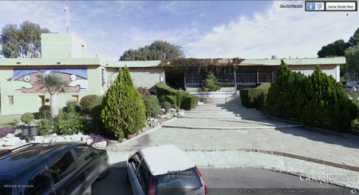

Puerta de Entrada
La cueva se encuentra situada en el Rincón de la Victoria, Málaga, en la calle Picasso, 21. Coordenadas para el navegador o google earth (36.719485,-4.297632).
Teléfono de contacto: 952 40 61 62.
Para más información de cómo llegar y su situación en el plano pinchar en Mapa de la zona.
La visita dura 45 minutos, y es ideal para que los más pequeños conozcan las cuevas. Está muy cerca de Málaga, requiere poco tiempo y pocos preparativos. Se puede realizar en cualquier época del año y condiciones meteorológicas.
La Cueva del Tesoro es la única gruta marina visitable en toda Europa. En ella se han descubierto pinturas rupestres de animales, restos de cerámica pertenecientes al Neolítico y objetos de industria lítica de sílex entre los que destaca una punta de flecha del Solutrense. Sin embargo, por lo que ha sido internacionalmente conocida es por la antigua tradición oral y escrita que recoge la existencia de un tesoro escondido por el emperador almorávide Tasufin Ibn Alí en el siglo XII. Desde el siglo XVII se llevaron a cabo expediciones de búsqueda del tesoro, y posteriormente continuadas en el siglo XX por Manuel Laza Palacios bajo premisas más científicas hasta su muerte.
PRECIOS:
Adultos: 4,65 € - Niños (0-3 años): Gratis - Infantil (4-14 años): 2,75 €
HORARIO:
Invierno (del 16/09 al 14/06): 10:45 / 11:30 / 12:15 / 13:00 / 15:45 / 16:30 y 17:15.
Verano (del 15/06 al 15/09): 10:45 / 11:30 / 12:15 / 13:00 / 16:45 / 17:30 / 18:15 y 19:00
Tanto los precios como horarios están actualizados en Marzo de 2015. Para mayor seguridad llamen al Teléfono de Información: 952 40 61 62
Mi impresión tras la visita: Es una cueva maravillosa que está muy mal conservada, tanto por las grandes modificaciones que se le ha hecho, tipo hormigonar el suelo, instalar un ascensor en su interior, etc., como por las pequeñas instalaciones tipo barandillas en muy mal estado, etc.
En cualquier caso merece la pena visitar esta maravilla de la naturaleza, tan maltratada por el hombre.
Coordenadas: 36.719485,-4.297632
Predicción meteorológica de la zona para el municipio donde se encuadra la ruta, según la Agencia Estatal de Meteorología.